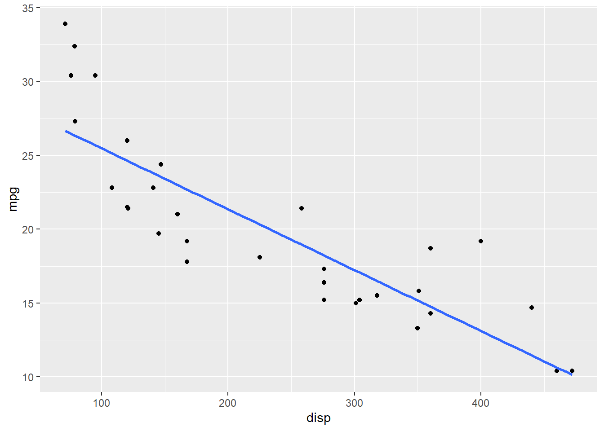

Model
Updated: 2020-08-18
This Document will provide an overview for many different statistical analyses that can be done in R. The intricacies of each of these methods will need to be further explored but this will provide you with a starting point.
Linear Regression
Linear Regression is a model fitting method which attempts to predict an value, usually numeric (i.e. brokerage) using one or more explanatory variables (i.e. day of week, distance, truck bill).
Basic Regression
For our examples, we will be using the mtcars dataset which is built into R. This dataset is very common and has several numeric variables about vehicles. They are:
## [1] "mpg" "cyl" "disp" "hp" "drat" "wt" "qsec" "vs" "am" "gear"
## [11] "carb"if we preview the first 10 rows of data, we can get a better sense for what we are dealing with.
you can also learn more about this dataset by typing help(mtcars) into the console.
Now, after receiving this information, our first hypothesis might be that an increase in engine displacement (disp) would tend to indicate a decrease in fuel efficiency (mpg). To determine whether or not this hypothesis holds significant statistical value, we can perform a linear regression. We do this with the following command:
##
## Call:
## lm(formula = mpg ~ disp, data = mtcars)
##
## Residuals:
## Min 1Q Median 3Q Max
## -4.8922 -2.2022 -0.9631 1.6272 7.2305
##
## Coefficients:
## Estimate Std. Error t value Pr(>|t|)
## (Intercept) 29.599855 1.229720 24.070 < 2e-16 ***
## disp -0.041215 0.004712 -8.747 9.38e-10 ***
## ---
## Signif. codes: 0 '***' 0.001 '**' 0.01 '*' 0.05 '.' 0.1 ' ' 1
##
## Residual standard error: 3.251 on 30 degrees of freedom
## Multiple R-squared: 0.7183, Adjusted R-squared: 0.709
## F-statistic: 76.51 on 1 and 30 DF, p-value: 9.38e-10The results above tell us several things. First, the formula of the linear regression is printed again. Then, we receive basic statistics about our residuals. Residuals are basically the variance between your actual data and your predicted data. The smaller your variance, the better your model. After the residual statistics, we receive information about the coefficients. Here we are interested in several things.
- Is
dispa significant predictor ofmpg? - What change in
mpgis effected by a 1-unit change indisp(i.e. slope of our regression line)? - What is the y-intercept of our regression line?
The answers to these questions are as follows:
We can determine displacement to be a significant predictor of
mpgbecause its p-value is less than 0.05. In fact, it is 9.380326510^{-10}. We could also tell this by the three asterisks to the right of the p-value. 1+ asterisks means that the p-value is at least smaller than 0.05.The slope of our regression line is the ‘Estimate’ value for
disp. In this case, it is -0.0412151. Notice, that a negative number here indicates that asdispincreases,mpgwill decrease.Finally, the y-intercept is the ‘Estimate’ value for the ‘(intercept)’ value. In this case it is 29.5998548.
Now that we have answered all three of our questions. We can say with statistical confidence that yes, an increase in disp will tend to indicate a decrease in mpg. The equation for this regression relationship is \[ mpg = -0.0412(disp) + 29.60 \]
Model Variable Selection
While this analysis might be sufficient for quick estimation of mpg, we have several more variables available to us that could potentially provide a more accurate estimation. While we could add all of the variables into the equation and gain a very accurate equation, this method is not very flexible or practical at scale. Therefore, we need to select which variables are important enough to keep. This is the process of variable selection.
A common method for variable selection is step-wise selection. In this method you can take several paths:
- [Simple Model] Start with one explanatory variable and add on one at a time until it no longer explains a significant amount of variation
- [Complex Model] Start with all of the explanatory variables and remove one at a time until all variables explain a significant amount of variation
- Do both at the same time and compare the results
The key values when doing step-wise model selection are the AIC/BIC values as well as the adjusted r-square value of the model as a whole. The goal in finding a good model is to minimize the AIC/BIC value and to maximize the r-square value.
If we return to our mtcars dataset, we can use this strategy to determine a better model for estimating mpg.
As a reminder, our dataset contains several numeric variables: mpg, cyl, disp, hp, drat, wt, qsec, gear, carb and two indicator variables: vs, am. Within the numeric values, cyl, gear, and carb are discrete variables and will be ignored. For now, we will just try to use the continuous numeric values to predict mpg for ease of interpretation. Additionally, since qsec is not really a characteristic of the car but rather a performance metric, we will leave it out of our analysis as well.
Our first attempt will be to fit the model in a backwards fashion. This will generally maintain a maximum accuracy at the cost of increased complexity. As you can see below, the step function evaluates a model object (model1). It tests the full model first and then removes variables that don’t significantly explain a change in mpg until it ends up at the “best” model.
## Start: AIC=65.77
## mpg ~ disp + hp + drat + wt
##
## Df Sum of Sq RSS AIC
## - disp 1 0.844 183.68 63.919
## <none> 182.84 65.772
## - drat 1 12.153 194.99 65.831
## - hp 1 60.916 243.75 72.974
## - wt 1 70.508 253.35 74.209
##
## Step: AIC=63.92
## mpg ~ hp + drat + wt
##
## Df Sum of Sq RSS AIC
## - drat 1 11.366 195.05 63.840
## <none> 183.68 63.919
## - hp 1 85.559 269.24 74.156
## - wt 1 107.771 291.45 76.693
##
## Step: AIC=63.84
## mpg ~ hp + wt
##
## Df Sum of Sq RSS AIC
## <none> 195.05 63.840
## - hp 1 83.274 278.32 73.217
## - wt 1 252.627 447.67 88.427##
## Call:
## lm(formula = mpg ~ hp + wt, data = mtcars)
##
## Coefficients:
## (Intercept) hp wt
## 37.22727 -0.03177 -3.87783In this case, the best model is determined to be mpg ~ hp + wt this means that even though we found disp to be a significant predictor of mpg in our simple regression equation, the combination of hp and wt actually offers “better” predictive power.
In order to run the model foreward we need to do a few extra steps. The first is to reduce the dataset to only the 5 variables we will need. The next step is to build a null model (model with no predictor variables) and a full model (the starting model of our previous method). These are what define the scope of our forward step-wise regression.
mtcarsSlim <- mtcars[,c(1,3:6)]
model2_null <- lm(mpg~1,data = mtcarsSlim)
model2_full <- lm(mpg~., data = mtcarsSlim)
step(model2_null, scope = list(lower = model2_null,upper = model2_full), direction = 'forward')## Start: AIC=115.94
## mpg ~ 1
##
## Df Sum of Sq RSS AIC
## + wt 1 847.73 278.32 73.217
## + disp 1 808.89 317.16 77.397
## + hp 1 678.37 447.67 88.427
## + drat 1 522.48 603.57 97.988
## <none> 1126.05 115.943
##
## Step: AIC=73.22
## mpg ~ wt
##
## Df Sum of Sq RSS AIC
## + hp 1 83.274 195.05 63.840
## + disp 1 31.639 246.68 71.356
## <none> 278.32 73.217
## + drat 1 9.081 269.24 74.156
##
## Step: AIC=63.84
## mpg ~ wt + hp
##
## Df Sum of Sq RSS AIC
## <none> 195.05 63.840
## + drat 1 11.3659 183.68 63.919
## + disp 1 0.0571 194.99 65.831##
## Call:
## lm(formula = mpg ~ wt + hp, data = mtcarsSlim)
##
## Coefficients:
## (Intercept) wt hp
## 37.22727 -3.87783 -0.03177From the output above you notice that the model starts with just the intercept. Then, it adds wt, then hp to arrive at the final model which happens to be the same as our first method. While the results are not always the same, it is common.
Finally, we will run the step-wise linear regression from both ends for good measure. This will essentially run both of these previous tests simultaneously and return the “best” model. Since both forward and backward selection returned the same model, we can expect this final method to be the same.
## Start: AIC=65.77
## mpg ~ disp + hp + drat + wt
##
## Df Sum of Sq RSS AIC
## - disp 1 0.844 183.68 63.919
## <none> 182.84 65.772
## - drat 1 12.153 194.99 65.831
## - hp 1 60.916 243.75 72.974
## - wt 1 70.508 253.35 74.209
##
## Step: AIC=63.92
## mpg ~ hp + drat + wt
##
## Df Sum of Sq RSS AIC
## - drat 1 11.366 195.05 63.840
## <none> 183.68 63.919
## + disp 1 0.844 182.84 65.772
## - hp 1 85.559 269.24 74.156
## - wt 1 107.771 291.45 76.693
##
## Step: AIC=63.84
## mpg ~ hp + wt
##
## Df Sum of Sq RSS AIC
## <none> 195.05 63.840
## + drat 1 11.366 183.68 63.919
## + disp 1 0.057 194.99 65.831
## - hp 1 83.274 278.32 73.217
## - wt 1 252.627 447.67 88.427##
## Call:
## lm(formula = mpg ~ hp + wt, data = mtcars)
##
## Coefficients:
## (Intercept) hp wt
## 37.22727 -0.03177 -3.87783As we predicted, the final model is the same as before. Knowing this, we can run a simple linear regression again to compare our values from earlier:
##
## Call:
## lm(formula = mpg ~ disp, data = mtcars)
##
## Residuals:
## Min 1Q Median 3Q Max
## -4.8922 -2.2022 -0.9631 1.6272 7.2305
##
## Coefficients:
## Estimate Std. Error t value Pr(>|t|)
## (Intercept) 29.599855 1.229720 24.070 < 2e-16 ***
## disp -0.041215 0.004712 -8.747 9.38e-10 ***
## ---
## Signif. codes: 0 '***' 0.001 '**' 0.01 '*' 0.05 '.' 0.1 ' ' 1
##
## Residual standard error: 3.251 on 30 degrees of freedom
## Multiple R-squared: 0.7183, Adjusted R-squared: 0.709
## F-statistic: 76.51 on 1 and 30 DF, p-value: 9.38e-10##
## Call:
## lm(formula = mpg ~ hp + wt, data = mtcars)
##
## Residuals:
## Min 1Q Median 3Q Max
## -3.941 -1.600 -0.182 1.050 5.854
##
## Coefficients:
## Estimate Std. Error t value Pr(>|t|)
## (Intercept) 37.22727 1.59879 23.285 < 2e-16 ***
## hp -0.03177 0.00903 -3.519 0.00145 **
## wt -3.87783 0.63273 -6.129 1.12e-06 ***
## ---
## Signif. codes: 0 '***' 0.001 '**' 0.01 '*' 0.05 '.' 0.1 ' ' 1
##
## Residual standard error: 2.593 on 29 degrees of freedom
## Multiple R-squared: 0.8268, Adjusted R-squared: 0.8148
## F-statistic: 69.21 on 2 and 29 DF, p-value: 9.109e-12You can see that while all variables in each of our models are significant (p-value < 0.05) and the overall models are significant (p-value <0.05), the second model actually explains about 10% more variation in mpg. We can tell this because the Adjusted R-squared values are 0.718 and 0.827 for the first and second model respectively.
With a good understanding of our models from a numeric standpoint, let’s review a few key figures. First, lets take a look at the first model with the regression equation plotted. We can do this with plotting functions built into R as such:
## Warning in abline(lm1): only using the first two of 8 regression coefficientsHowever, many users of R agree that the ggplot2 package offers many desirable plotting functions and therefore is used quite frequently. if we want to build the same figure in ggplot2 syntax, we do the following:
## Warning: package 'ggplot2' was built under R version 3.6.3## `geom_smooth()` using formula 'y ~ x'
You will notice that using ggplot2 prevents you from having to build a linear model first. Instead, you can just use the geom_smooth() option. ggplot2 can be confusing at first but there are several good resources out there, including their own documentation.
The fundamental difference between the built-in plotting functions and ggplot2 is that the base R function builds layered images and ggplot2 builds one cohesive image file. This makes the base functions arguably more flexible because each layer doesn’t care about what’s in the other layers. However, it also means that there is potential for unintentional plotting of incorrect information. I encourage you to try both and experience where each method excels.
Now, since the second model uses two explanatory variables, we have some options for how we want to display the information. The first option is to plot the first variable (hp) as normal and then code the second variable (wt) as something else (i.e. color, size, shape, etc). To demonstrate, let’s code it as color where darker colors indicate a heavier car.
The next option is to plot the values in three dimensional space. For this we will need another package called plotly
## Loading required package: plotly## Warning: package 'plotly' was built under R version 3.6.3##
## Attaching package: 'plotly'## The following object is masked from 'package:ggplot2':
##
## last_plot## The following object is masked from 'package:stats':
##
## filter## The following object is masked from 'package:graphics':
##
## layout## Warning: `arrange_()` is deprecated as of dplyr 0.7.0.
## Please use `arrange()` instead.
## See vignette('programming') for more help
## This warning is displayed once every 8 hours.
## Call `lifecycle::last_warnings()` to see where this warning was generated.